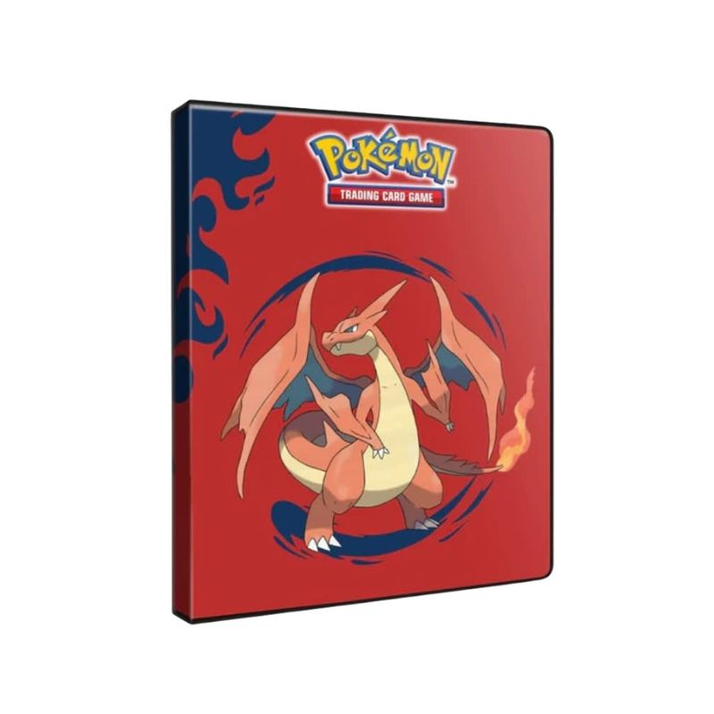
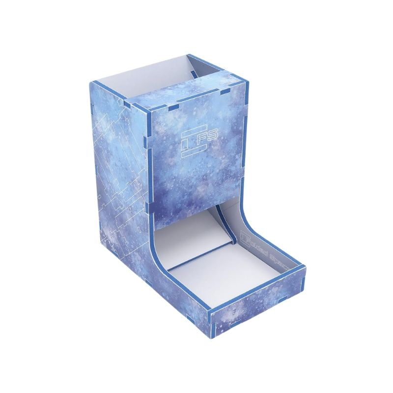
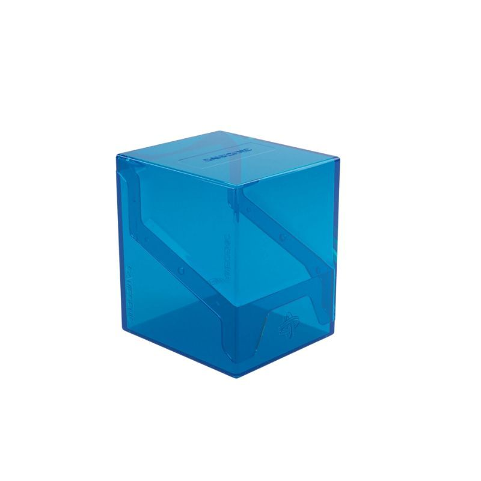

Carpeta 4 bolsillos: Mega Charizard - Ultra PRO
La carpeta 4-Pocket Portfolio para Pokémon presenta una vibrante
ilustración Mega Charizard Y en la portada y Mega Charizard X en la
contraportada. Permite almacenar y proteger hasta 40 cartas tamaño
estándar con carga simple o 80 cartas con doble carga en páginas de
polipropileno seguras para archivo. Además, incluye espacio central
para guardar hasta 4 cartas Pokémon de tamaño oversized.
$12.990

Torre de Dados a Color - Folded Space
Las láminas impresas de Evacore son de doble cara, por lo que puedes
elegir qué lado usar en el exterior, ofreciendo dos opciones de color
diferentes para la torre terminada. Las láminas también utilizan
espuma azul marino, que combina muy bien con el diseño de impresión a
color. La Dice Tower v2 es una excelente forma de probar nuestro
material Evacore con impresión a color y ver cómo se construye uno de
nuestros productos. El Evacore es suave al tacto, lo que lo hace ideal
para guardar componentes de juegos, además de permitir que la torre de
dados sea resistente y silenciosa al lanzar los dados.
$13.990

Portamazo Bastion 100+ XL Azul GameGenic
El modelo Bastion 100+ XL es una caja para mazos muy compacta y
resistente que protege más de 100 cartas en doble funda con fundas
interiores muy gruesas. Además, podrás ver la parte superior de la
carta Commander sin tener que abrir la caja gracias a que está hecha
de material translúcido y a la posición de las solapas de cierre. Su
mecanismo de cierre innovador en un solo clic protege los mazos y, al
mismo tiempo, permite acceder fácilmente a las cartas.
$11.990